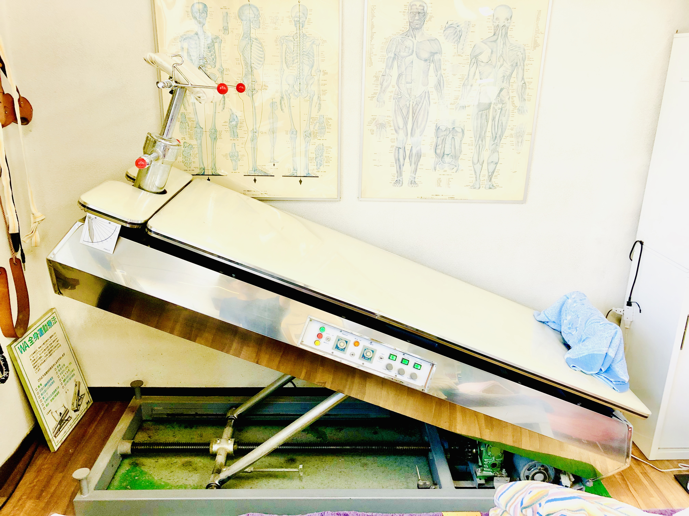
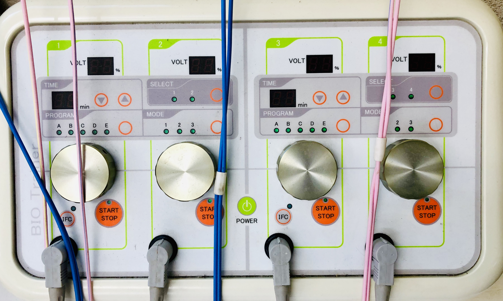

ヤマザキ接骨院では、手を使った手技による安全で痛くない施術を行なっております。また お客様にゆっくり リラックスした時間をお過ごし頂けますよう、清潔で安らげる空間づくりを徹底しています。お帰りの際「健康」「元気」「笑顔」になっていただける接骨院を目指しております。お気軽にご相談、お立ち寄りください。
施術内容を詳しく見る


当院では「アクティベータ・メソッド」・「トムソンテクニック」というカイロプラクティックのテクニックを用いて骨盤矯正・骨格矯正を行っております。いずれもボキボキせず痛くない安全な施術ですのでお子様からご年配の方まで安心して受けていただけます。


手を使った手技により症状の根本原因と思われる部位にコンタクトしていきます。また プロスポーツの現場でも活躍する微弱電流治療器「エレクトロアキュスコープ」と「キネシオテープ」を用いて自然治癒力を引き出し症状を早期改善していきます。



骨格と筋肉に精通した柔道整復師（国家資格）が、お客様の自宅に出向いて診察するサービスです。当院まで通うことが困難なお年寄りの方でも安心して治療を受けることができます。尚こちらの診察に関しましては事前予約していただいております。